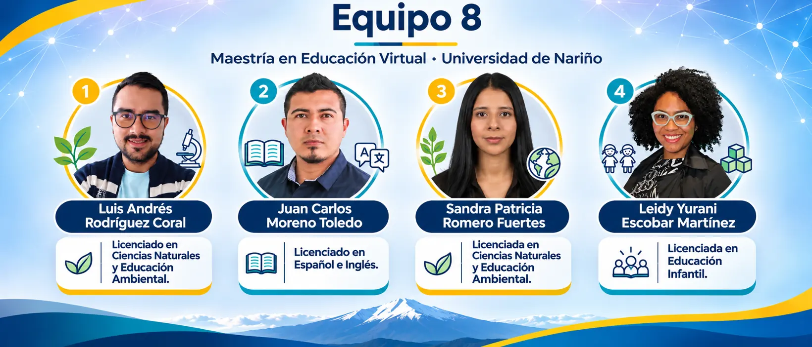

Documento académico
Plan curricular hipertextualizado
Estructura curricular, fundamentación, resultados de aprendizaje, actividades, evidencias y rúbricas.
Abrir plan curricular ↗Un recorrido crítico por la enseñanza, los sujetos, la mediación y la evidencia de aprendizaje. Cuatro preguntas que se entrelazan para repensar las decisiones pedagógicas.
Diseño académico propuesto · No constituye evidencia de implementación escolar.
Consulta los tres documentos académicos, explora el Google Sites y accede a la defensa audiovisual de la pista D3.M4 «¿Se trata realmente de enseñar?».
Estructura curricular, fundamentación, resultados de aprendizaje, actividades, evidencias y rúbricas.
Abrir plan curricular ↗Justificación del diseño, integración de los nodos, síntesis crítica y vínculos de los productos académicos.
Abrir informe TP4 ↗Desarrollo de los cuatro ejes, microsecuencia y fundamentos de la experiencia «¿Se trata realmente de enseñar?».
Abrir planificación ↗Navegación por los cuatro nodos curriculares, materiales y recursos complementarios del Equipo 8.
Abrir Google Sites ↗Sustentación audiovisual del proceso de diseño y construcción del trabajo práctico.
Ver defensa audiovisual ↗Acceso externo: los documentos y los recursos se abren en una pestaña nueva; su disponibilidad depende de los permisos concedidos en cada plataforma. Las actividades de este HTML pueden desarrollarse de manera local.
La enseñanza es una práctica intencional y situada que organiza condiciones para aprender. Haber explicado algo no demuestra, por sí mismo, que alguien lo comprendió. El problema de los residuos escolares permite poner a prueba esa diferencia, integrando saberes científicos, matemáticos, ciudadanos y territoriales.
Concepciones, finalidades y diferencias entre enseñanza, educación y pedagogía.
Mediación, estudiantes activos, voces y condiciones de participación.
Transposición didáctica, secuencias y tecnologías con sentido.
Evidencia, retroalimentación, transferencia y reflexión docente.
Un dato global no explica automáticamente una realidad escolar local. El trabajo docente exige distinguir fuentes, contextos, incertidumbres y razones para decidir.
Morin · Freire · TransdisciplinariedadLa pregunta cambia de «¿ya expliqué?» a «¿qué pudo comprender el estudiante, cómo lo sabemos y qué debemos revisar?». La tecnología no reemplaza la mediación ni la comprobación.
Evaluación formativa · ReflexividadEnseñar selecciona saberes y organiza condiciones de estudio; educar implica un horizonte formativo más amplio; la pedagogía reflexiona críticamente sobre sus fines, relaciones y condiciones. El diálogo no renuncia al rigor del conocimiento.
RA1: diferenciar estos conceptos y argumentar una finalidad para primaria con un caso y una objeción.
Un grupo recita los colores de los recipientes de residuos, pero no puede explicar qué hacer con un envase compuesto. ¿La clase «salió bien»?
La reproducción de una consigna no comprueba por sí sola que exista comprensión transferible.
Define tu posición inicial, formula una objeción y reformula la idea. Esta versión digital es una adaptación breve de la actividad de 90 minutos del plan.
E1 esperada en el plan completo: texto argumentativo de 300–400 palabras, con cita, caso, objeción y revisión entre versiones.
Puente conceptual: de la concepción a la evidencia (N4) ↗Los estudiantes no son receptores homogéneos. El docente media con responsabilidad intelectual: escucha voces y contextos, diferencia testimonio de prueba y ofrece alternativas accesibles de participación.
RA2: proponer una mediación inclusiva que incorpore perspectivas y supere una barrera.
Estudiantes, familias, docentes y recuperadores pueden describir experiencias distintas sobre los residuos. Reconocer sus aportes no significa aceptar todas las afirmaciones sin contraste.
Si no hay participación real autorizada, emplea roles simulados e indícalo expresamente.
Selecciona un actor para explorar una perspectiva simulada. Después explica qué información necesitarías para verificarla.
E2: mapa de actores, procedencia de voces, barrera y decisión fundamentada; alternativa sin conexión en audio, texto o dibujo.
Puente conceptual: de las voces a la mediación (N3) ↗Ni la novedad tecnológica ni la cantidad de enlaces garantizan aprender. La transposición didáctica examina qué cambia cuando el saber de referencia se transforma en contenido, actividad y pregunta escolar.
RA3: justificar una secuencia de indagación accesible, con matriz y evidencias.
UNEP (2024) proyecta 3,8 mil millones de toneladas anuales de residuos sólidos municipales en 2050. Es un escenario proyectado, no una medición futura realizada.
Una cifra mundial no puede atribuirse directamente a una escuela de Nariño.
Consultar informe ambiental de UNEP ↗Clasifica cada afirmación. En este ejercicio, «dato documentado» alude a lo indicado explícitamente en la fuente; «proyección» anticipa un escenario posible.
Nota: la afirmación 3 es una predicción sin sustento local; etiquetarla como «proyección» no la convierte en una proyección válida. La afirmación 4 se refiere al contenido publicado en una fuente, no a una medición local.
| Plano | Aplicación al problema de residuos |
|---|---|
| Saber de referencia | Informe UNEP 2024: gestión, prevención y distinción entre estimación y proyección. |
| Saber por enseñar | Reconocer materiales, argumentar clasificación y distinguir reducir, reutilizar y reciclar. |
| Tarea enseñada | Comparar tarjetas de objetos limpios, justificar una decisión y proponer prevención. |
| Evidencia de aprendizaje | Explicar qué hacer con un objeto nuevo y revisar la respuesta después de recibir información. |
| Vigilancia epistemológica | Verificar posibilidades locales; no asumir reciclaje universal ni trasladar cifras globales a una escuela. |
E3 completa: matriz, microsecuencia de 60 minutos, prototipo visual accesible y comentario de revisión entre pares.
Ver microsecuencia ↗La evaluación formativa no consiste simplemente en asignar una nota: utiliza evidencias para ajustar decisiones. Un caso resuelto en una simulación permite valorar una explicación, pero no demostrar efectos duraderos en estudiantes reales.
RA4: interpretar evidencias iniciales y finales y proponer un rediseño sustentado.
Pregunta inicial → experiencia → nueva tarea comparable → contraste → retroalimentación → revisión.
La evidencia no se confunde con su interpretación ni con una declaración de éxito.
Compara dos situaciones. No busques repetir una palabra clave: fundamenta una decisión ante un caso nuevo.
E4: portafolio antes/después, retroalimentación aplicada, decisión de rediseño y autoevaluación de 150–200 palabras.
Puente conceptual: reformular qué significa enseñar (N1) ↗¿Cómo decidir qué hacer con los residuos de nuestra escuela y qué evidencias mostrarían que comprendimos esa decisión? Es un caso didáctico propuesto y necesita contextualización antes de cualquier implementación.
Propiedades de materiales y criterios de prevención; cuidado con clasificaciones universales.
Conteos, unidades y registros comparables; diferencia entre observado y proyectado.
Argumentación, escucha de objeciones y acuerdos sustentados.
Familias y recuperadores aportan saberes sujetos a contraste y consentimiento.
Decidir ante una tarjeta de residuo limpio y explicar por qué.
Contrastar materiales y condiciones locales con fuentes seleccionadas.
Acordar una medida de prevención y representarla.
Resolver un caso nuevo de características comparables.
«Antes pensaba…, ahora sostengo…, porque…».
Asume el rol de docente de primaria. Tus elecciones mostrarán consecuencias pedagógicas plausibles; no hay un diagnóstico automático de tu capacidad profesional. Lee la retroalimentación y revisa tu decisión.
Reúne tus respuestas de los nodos y el recorrido del desafío. Puedes copiar el registro o descargarlo como archivo de texto. Este recurso no envía tus datos al equipo ni los almacena en un servidor. Si sales de la página sin copiar o descargar, podrías perderlos.
El recurso se construye desde aportes de ciencias naturales, educación ambiental, lenguas y educación infantil. La integración de estas perspectivas requiere contrastar fuentes, explicitar decisiones compartidas y mantener abierta la revisión del diseño.

Equipo 8 · Universidad de Nariño. Perfiles profesionales correspondientes a los integrantes del trabajo.
Los siguientes enlaces corresponden a obras y documentos citados en el plan adjunto. El contenido de este HTML sintetiza la propuesta del Equipo 8; sus actividades no constituyen resultados de una investigación empírica.
Créditos del contenido: Equipo 8, Luis Andrés Rodríguez Coral, Sandra Patricia Romero Fuertes, Juan Carlos Moreno Toledo y Leidy Yurani Escobar Martínez. Adaptación interactiva basada en el plan curricular, el informe TP4 y la planificación aportados. No se integraron fotografías ni videos con derechos de terceros en el archivo.